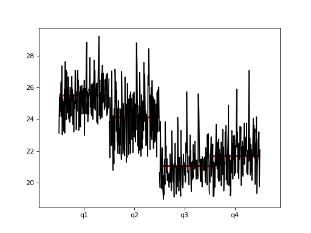

statsmodels.graphics.tsaplots.quarter_plot¶
-
statsmodels.graphics.tsaplots.quarter_plot(x, dates=None, ylabel=None, ax=None)[source]¶ Seasonal plot of quarterly data
- Parameters
- xarray-like
Seasonal data to plot. If dates is None, x must be a pandas object with a PeriodIndex or DatetimeIndex with a monthly frequency.
- datesarray-like, optional
If x is not a pandas object, then dates must be supplied.
- ylabelstr, optional
The label for the y-axis. Will attempt to use the name attribute of the Series.
- axmatplotlib.axes, optional
Existing axes instance.
- Returns
- matplotlib.Figure
Examples
>>> import statsmodels.api as sm >>> import pandas as pd
>>> dta = sm.datasets.elnino.load_pandas().data >>> dta['YEAR'] = dta.YEAR.astype(int).astype(str) >>> dta = dta.set_index('YEAR').T.unstack() >>> dates = pd.to_datetime(list(map(lambda x: '-'.join(x) + '-1', ... dta.index.values))) >>> dta.index = dates.to_period('Q') >>> fig = sm.graphics.tsa.quarter_plot(dta)
(Source code, png, hires.png, pdf)

{kind=link}
{kind=link}